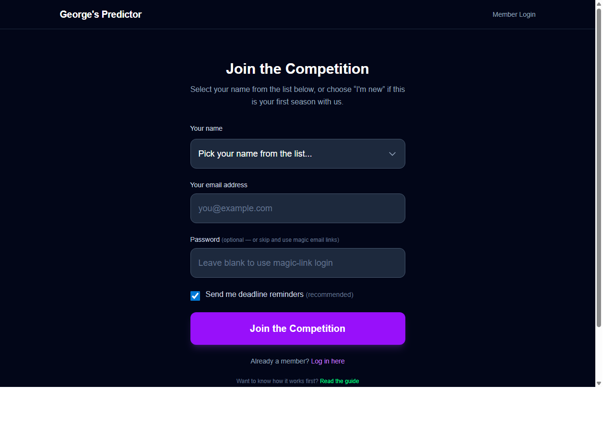
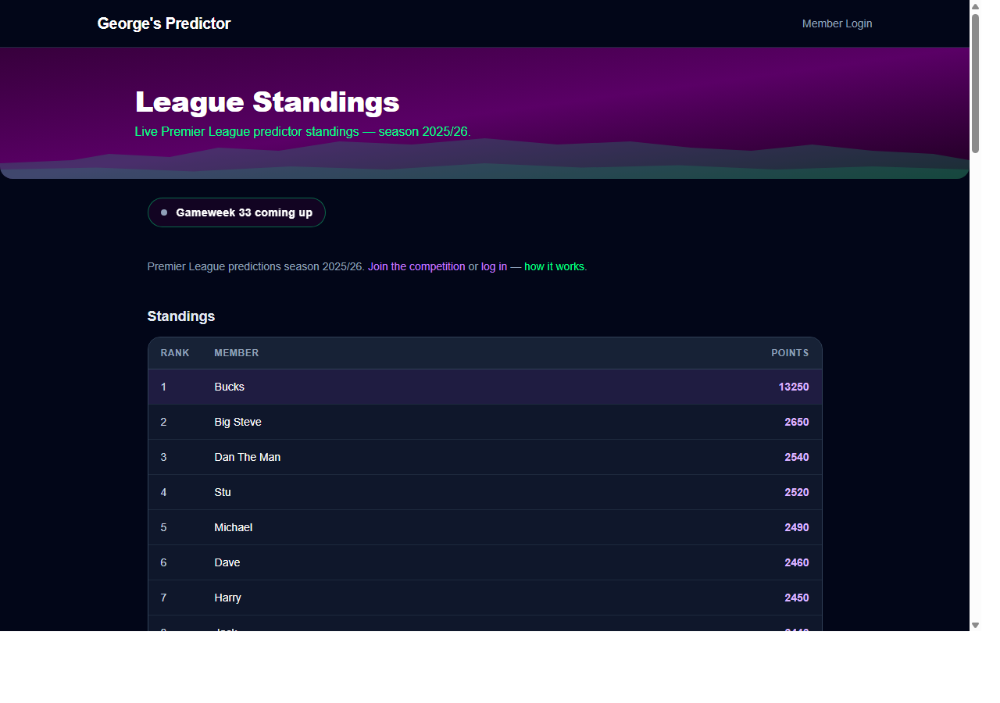

Weekly Premier League predictions with your mates — 10 years strong
https://georges-predictor.vercel.app
Welcome to the online version of George's Predictor. Everything you used to track in a spreadsheet is now in a single site — scores auto-sync from the Premier League on Friday mornings, and the league table updates live as games finish. Takes about 2 minutes to get set up.
1. Getting signed up
1 Open https://georges-predictor.vercel.app in any browser (phone or laptop both fine).
2 Click the green Sign up button at the top of the page.
3Pick your name from the dropdown list. Scroll through — we've pre-loaded everyone who was in last year's league, with all your points so far. If your name is already there, pick it — don't type it fresh, or you'll end up with a duplicate and lose your points.
4 Enter your email address.
5Optional: set a password. If you skip this, you'll log in via one-time "magic links" emailed to you (no password to remember). If you set one, you can log in either way.
6 Submit. George gets a notification to approve you.

The signup page at georges-predictor.vercel.app/signup.
Approval email: Once George approves, you'll get an email with a login link. Check your spam/junk folder if it doesn't land within a few minutes — the sender is a no-reply address which some providers filter by default.
2. Logging in
Two ways in:
Magic link — enter your email, click the link in your inbox. No password needed.
Password — if you set one during signup, use email + password. Faster on repeat logins.
Forgot your password? On the admin/login side there's a "Forgot password?" link. For magic-link users, just request a fresh link any time.
3. Making predictions
1 Once logged in, click My Predictions in the top navigation.
2 You'll see every fixture for the current gameweek with a score input next to each (home / away).
3 Use the +/− buttons or type a number. Fill every fixture.
4 Hit Save predictions at the bottom. You can edit any time up to kickoff of each individual match — once a match kicks off, that prediction is locked.
Deadline reminders go out by email if you opted in at signup. You can change the opt-in any time from your profile page.
4. Scoring
Outcome
Points
Correct result (W / D / L)
10 pts
Correct exact score
30 pts
Bonus applied correctly
20 pts (varies by bonus)
Golden Glory
60 pts
Points appear next to each prediction as results come in. Your gameweek total updates at the bottom of the page.
5. Bonuses
Each gameweek, George sets one "active bonus". You pick one fixture to apply it to before kickoff (a star icon marks your choice). If the bonus hits, you get extra points. Examples of bonus types:
Double Bubble — predict an exact score; points double if correct.
Clean Sheet — pick a team; bonus if they don't concede.
Golden Glory — 60 pts if you nail the exact score on your bonus pick.
6. Last One Standing (LOS)
Pick one team to win each week. Lose, and you're out. Can't pick the same team twice in the season. Winner walks off with the LOS prize.
7. The league table
The League Table shows live standings — starting points from last season + any you've earned this season. Top of the pile gets the crown highlight.

The live league table at georges-predictor.vercel.app/standings.
8. Common questions
My points show 0 — what happened?
You probably typed your name in yourself instead of picking it from the list. Message George on WhatsApp. He can fix it in under a minute.
I didn't get the email to log in
Check your spam or junk folder first. Still nothing? Message George and he'll send you a fresh link.
Can I change my predictions?
Yes — as long as the match hasn't kicked off. Once a match starts, that one is locked, but the rest of the week's matches are still open until they kick off.
What happens if a match is postponed?
Nothing for you to do. The site spots it and takes that match out of the week's scoring. You won't be penalised.
How do I change my email or stop email reminders?
Click Profile at the top of the page. You can change your email, your name, and turn reminder emails on or off.
9. Need help?
Any problems — message George on WhatsApp. Typical fixes take under a minute on the admin side.